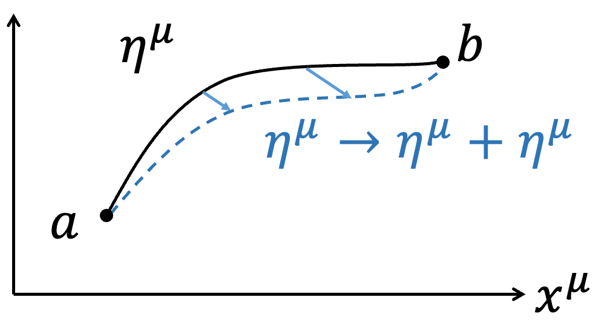

- 前言
- 初階變分法
- 簡化變分表示法
- Lagrangian的不唯一性
- 動量空間的Lagrangian
- 古典諾特定理
- Maximal Symmetry Action
- 淺談Particle與EM Field交互作用下的Action
- Free Particle Action的變分
- Charge Particle與EM Field作用下的變分與運動方程
- 4-Volume \(d^4 x\)與Lagrangian Density \(\mathcal{L}\)
現代的物理學發展的框架下，喜歡從作用量Action S出發，當物理學家寫下Action後（根據實驗、物理現象和限制等等猜出），針對Action做變分\(\delta S\)（Variation）後，在最小作用量原理（Principle of least action）\(\delta S=0\)的要求下，就可以得到物理遵守的運動方程，後續就根據不同的物理系統求滿足運動方程的物理量變化。 古典力學的發展上，由d' Alembert利用虛功原理可以得到 $${d \over dt}{\partial L \over \partial \dot{x}_i}-{\partial L \over \partial x_i}=0$$ 後來Hamilton進一步闡明上述方程是滿足 $$\int_a^b L(x_1,...,x_n,\dot{x_1},...,\dot{x_n},t)dt$$ 利用變分法取極值\(\delta S=0\)的必然結果。 在物理學上，變分法通常用於新理論在初期發展時，由於物理學家還不知道正確的運動方程，故會根據實驗成果、物理經驗等去猜Action可能的形式，然後利用變分法得到描述Lagrangian滿足的運動方程，此後變分法便功成身退，後續的解題過程只要處理運動方程即可。例如 $$\int_a^b L(x,\dot{x},t)dt$$ 用變分後可以得到Euler-Lagrange equation $${d \over dt}{\partial L \over \partial \dot{x}}-{\partial L \over \partial x}=0$$ 後續理論力學課程只要會解Euler-Lagrange equation就好，所以整學年的課程變分法不常出現，於是應數相關的書籍對於變分法提及就不多。故在此簡單用不是數學上嚴謹的方式稍為介紹一下變分法。
如果今天，一個泛函（Functional）的積分問題
$$S[F(x,\dot{x},t)]=\int_a^b F(x,\dot{x},t)dt$$
其中，\(x=x(t)\)、\( \dot{x}=dx \over dt\)，固定\(a\)、\(b\)下改變軌跡\(x(t)\)的形式會對積分S造成影響，我們想找到S的極值（Extreme value，不論極大或極小）下，軌跡\(x(t)\)會是什麼形式？或是\(F(x,\dot{x},t)\)該滿足什麼條件？根據微積分的概念，在\(f(x)\)極值\(x_0\)附近做微小的變化\(x_0 + \varepsilon\)時，\(f(x)\)是不會有變化的，即\(df=0\)。類似的想法，\(S\)在極值附近時，\(x(t)\)稍微改變形式，\(\delta S=0\)。我們可以將積分問題簡單的用圖像表達，不同\(x(t)\)的函數形式表示不同的路徑連結\(a\)到\(b\)點。
 |  |
前一部分介紹了簡單的變分法概念，但是需要引入任意的函數\(\eta (t)\)，手法上稍嫌煩瑣，不利於後續操作。第二部分以相同的概念，採用比較抽象的想法但相同的數學手法，演示一次變分法的操作。有點像將變分的操作類同於微分操作。
 | |
|
進階：Thm.1 :微分與變分對調 如果今天微分與變分針對的對象不同，如對t微分 \(d \over dt\)、對x變分\(\delta x\)，則 \(d \over dt\)與\(\delta \)可以對調。 $$\delta \dot{f}=\dot{f} (x+\delta x)-\dot{f}(x)= {d \over dt} \left(f(x+\delta x)-f(x)\right)= {d \over dt} \delta f$$ |
$$\delta S=\int _a^b {\partial F\over\partial x} \delta xdt+ \int _a^b {\partial F\over \partial \dot{x} } \left( {d \over dt} \delta x\right)dt $$ 同樣的手法對第二項做分部積分 $$\int _a^b {\partial F\over \partial \dot{x} } \left( {d \over dt} \delta x\right)dt = \color{red}{{\partial F\over \partial \dot{x} } \delta x \Big|_a^b}-\int _a^b {d \over dt} {\partial F\over \partial \dot{x} } \delta xdt$$ 注意紅色這一項，因為我們要求變分\(\delta x\)滿足\(\delta x(a)=\delta x(b)=0\)，所以\( \color{red}{{\partial F\over \partial \dot{x} } \delta x\Big|_a^b=0}\) $$\delta S=\int _a^b {\partial F\over\partial x} \delta xdt-\int _a^b \left( {d \over dt} {\partial F\over \partial \dot{x} } \right)\delta xdt =\int _a^b \left( {\partial F\over\partial x}- {d \over dt} {\partial F\over \partial \dot{x} } \right)\delta xdt=0$$ \(\delta x \) is arbitrary. $$ {\partial F\over\partial x}- {d \over dt} {\partial F\over \partial \dot{x} } =0$$ Euler-Lagrange equation
| 進階：Thm.2:變分的Chain rule $$\delta (FG)={\partial (FG)\over\partial x} \delta x+{\partial (FG)\over \partial \dot{x} } \delta \dot{x}=\left( {\partial F\over\partial x} G+F {\partial G\over\partial x}\right)\delta x+\left( {\partial F\over \partial \dot{x} } G+F {\partial G\over\partial \dot{x}} \right)\delta \dot{x}$$ $$=\left( {\partial F\over\partial x} \delta x+ {\partial F\over \partial \dot{x} } \delta \dot{x} \right)G+F\left({\partial G\over\partial x} \delta x+{\partial G\over\partial \dot{x}} \delta \dot{x} \right)= \delta F\cdot G+F\cdot \delta G$$ |
| 進階：Thm.3:針對函數F同乘同除另一函數G，不影響變分 $$\delta F=\delta \left(F\cdot {G\over G}\right)=\delta \left(F\cdot G\cdot G^{-1} \right)=\delta F\cdot G\cdot G^{-1}+F\cdot \delta G\cdot G^{-1}+F\cdot G\cdot \delta (G^{-1} )$$ $$=\delta F+F\cdot \delta G\cdot G^{-1}+F\cdot G\cdot \left(-{\delta G\over G^2} \right)=\delta F$$ |
理論力學的課程中，都有學過當\(Lagrangian\)添加一個函數\(f=f(q,t)\)時間的全微分項\({df\over dt}\)，\(L→L+{df\over dt}\)並不會改變EoM。這可以從兩個部分來看。第一種是最簡單的從變分的端點，
$$\delta S=\delta \int _a^b (L+{df\over dt})dt$$
$$=\delta \left[\int _a^b Ldt+\int _a^b {df\over dt} dt \right]$$
$$=\delta \left[\int _a^b Ldt+f(b)-f(a)\right]$$
$$=\delta \int _a^b Ldt+\delta f(b)-\delta f(a)$$
但因為端點不做變分，所以\(\delta f(b)=\delta f(a)=0\)，自然的
$$\delta \int _a^b \left(L+{df\over dt}\right)dt=\delta \int _a^b Ldt=0$$
另外一種是直接展開，觀察\(L+\dot{f}\) 是否滿足
\({d\over dt} {\partial \over\partial \dot{x}}\left( L+\dot{f} \right) -{\partial \over\partial x}\left( L+\dot{f} \right)=0\)
$${d\over dt} {\partial \over\partial \dot{x}}\left( L+\dot{f} \right) -{\partial \over\partial x}\left( L+\dot{f} \right)={d\over dt} {\partial L\over\partial \dot{x}} -{\partial L\over\partial x}+\color{red}{{d\over dt} {\partial \dot{f} \over\partial \dot{x}} -{\partial \dot{f} \over\partial x}}$$
紅色項我們可以觀察兩件事，因為\(f=f(x,t)\)
$$df={\partial f\over\partial x} dx+{\partial f\over\partial \dot{x}} d\dot{x} +{\partial f\over\partial t} dt→\dot{f} ={\partial \over\partial x} \dot{x} +{\partial f\over\partial \dot{x}} \ddot{x} +{\partial f\over\partial t}$$
所以
$${ \partial \dot{f} \over\partial \dot{x}} ={\partial f\over\partial x}\to dot\ cancellation$$
$${\partial \over\partial x} \dot{f}={\partial \over\partial x} \left({\partial \over\partial x} \dot{x} +{\partial f\over\partial \dot{x}} \ddot{x} +{\partial f\over\partial t}\right)$$
$$=\left({\partial \over\partial x} {\partial f\over\partial x}\right) \dot{x} +\left({\partial \over\partial x} {\partial f\over\partial \dot{x}} \right) \ddot{x} +\left({\partial \over\partial x} {\partial f\over\partial t}\right)$$
$$={d\over dt} \left({\partial f\over\partial x}\right)\to{d\over dt},{\partial \over\partial x} commute $$
會得到紅色項為零
$$\color{red}{{d\over dt} {\partial \dot{f} \over\partial \dot{x} }-{\partial \dot{f} \over\partial x}={d\over dt} {\partial f\over\partial x}-{d\over dt} {\partial f\over\partial x}=0}$$
故
$${d\over dt} {\partial \over\partial \dot{x}}\left( L+\dot{f} \right) -{\partial \over\partial x}\left( L+\dot{f} \right)={d\over dt} {\partial L\over\partial \dot{x}} -{\partial L\over\partial x}=0$$
添加\(\dot{f}\) 不會改變EoM。
Lagrangian equation不只可以在\((q,\dot{q} ,t)\)中描述，也可以在動量空間\((p,\dot{p} ,t)\)中描述，轉換如下： $$ p={\partial L \over \partial \dot{q}} $$ $$\dot{p} ={d\over dt} {\partial L\over\partial \dot{q}}={\partial L\over\partial q}$$ \(p\)為廣義動量。利用\(L=L(q,\dot{q} ,t)\)， $$dL=\dot{p} dq+pd\dot{q} +{\partial L\over\partial t} dt$$ $$=d(\dot{p} q)-qd\dot{p} +d(p\dot{q} )-\dot{q} dp+{\partial L\over\partial t} dt$$ $$=\color{red}{d(\dot{p} q+p\dot{q} )}-qd\dot{p} -\dot{q} dp+{\partial L\over\partial t} dt$$ 紅色項移項 $$d \left(L\color{red}{-\dot{p} q-p\dot{q}} \right)=-qd\dot{p} -\dot{q} dp+{\partial L\over\partial t} dt$$ 定義新的Lagrangian \(\bar{L}\) $$\bar{L} \equiv L-\dot{p} q-p\dot{q} =L-{d\over dt} (pq)$$ 得到\(d\bar{L}\) $$ d\bar{L}=-qd\dot{p} -\dot{q} dp+{\partial L\over\partial t} dt$$ 比較左右兩邊可以得到 $${\partial \bar{L}\over\partial \dot{p} }=-q$$ $${\partial \bar{L}\over\partial p}=-\dot{q}$$ $$→{d\over dt} {\partial \bar{L}\over\partial \dot{p}}={\partial \bar{L}\over\partial p}$$ 為動量空間的EoM。可以注意到形式不變(Form invariant)。
古典諾特定理
諾特定理作為古典力學重要的定理，也是Lagrangian、Hamiltonian超越牛頓力學的重要原因。諾特定理的表述為，當系統滿足EoM、或最小作用量原理之下，我們若給予Action S一個變化\(\delta \alpha\)卻可以保持\(\delta S=0\)，諾特定理表明會對應到一個守恆量。在這邊我們討論同時對時間\(t\)跟物理軌跡\(q\)做變分
$$q \to \bar{q} = q+\delta q$$
$$t \to \bar{t} =t+\delta t$$
但值得注意的是，軌跡\(q\)作為時間\(t\)的函數，會受到自身變分的影響之外，也會受到時間改變的有影響，定義\(\Delta q\)表示完整影響
$$\Delta q≡\bar{q} (\bar{t} )-q(t)=\bar{q} (\bar{t} )-q(\bar{t} )+-q(\bar{t} )-q(t)=\delta q+\dot{q} \delta t$$
考慮變分前後的差別
$$\delta S=\delta \int L dt=\int \delta L dt+\int L d\delta t$$
第一項仔細寫下為
$$\delta L=L(\bar{q} (\bar{t} ),\dot{\bar{q}}(\bar{t} ),\bar{t} )-L(q(t),\dot{q} (t),t)$$
$$=L(\bar{q} (\bar{t} ),\dot{\bar{q}}(\bar{t} ),\bar{t} )-L(q(\bar{t} ),\dot{q} (\bar{t} ),\bar{t} )+L(q(\bar{t} ),\dot{q} (\bar{t} ),\bar{t} )-L(q(t),\dot{q} (t),t)$$
$$={\partial L\over\partial q} \delta q+{\partial L\over \partial \dot{q} } \delta \dot{q} +{dL\over dt} \delta t$$
$$={\partial L\over\partial q} \delta q-\left({d\over dt} {\partial L\over \partial \dot{q} }\right) \delta q+{d\over dt} \left({\partial L\over \partial \dot{q} } \delta q\right)+{dL\over dt} \delta t$$
$$=\left[{\partial L\over\partial q} -{d\over dt} {\partial L\over \partial \dot{q} } \right]\delta q+{d\over dt} \left({\partial L\over \partial \dot{q} } \delta q\right)+{dL\over dt} \delta t$$
因為Lagrangian滿足EoM
$${\partial L\over\partial q} -{d\over dt} {\partial L\over \partial \dot{q} } =0 $$
所以第一項只剩下
$$\delta L={d\over dt} \left({\partial L\over \partial \dot{q} } \delta q\right)+{dL\over dt} \delta t$$
第二項單純改寫
$$\int L d\delta t=\int L {d\delta t\over dt} dt$$
將兩項合併
$$\delta S=\int \left[{d\over dt} \left({\partial L\over \partial \dot{q} } \delta q\right)+{dL\over dt} \delta t\right] dt+\int {L d\delta t\over dt} dt=\int {d\over dt} \left[{\partial L\over \partial \dot{q} } \delta q+L\delta t\right] dt$$
但因為\(\delta q\)只是軌跡自身的變分，必須考慮到完整的變化\(\Delta q\)，利用
$$\delta q=\Delta q-\dot{q} \delta t$$
代入
$$\delta S=\int {d\over dt} \left[{\partial L\over \partial \dot{q} } \left(\Delta q-\delta t \right)+L\delta t\right] dt=\int {d\over dt} \left[{\partial L\over \partial \dot{q} } \Delta q-\left({\partial L\over \partial \dot{q} } \dot{q} -L\right)\delta t\right] dt$$
如果經過變分後不變，即\(\delta S=0\)，代表
$$ {d\over dt} \left[{\partial L\over \partial \dot{q} } \Delta q\right]=0 \to {\partial L\over \partial \dot{q} } \Delta q =const.$$
$$ {d\over dt} \left[ \left({\partial L\over \partial \dot{q} } \dot{q} -L\right)\delta t\right]=0 \to \left({\partial L\over \partial \dot{q} } \dot{q} -L\right)\delta t = const.$$
對應軌跡q變分不變的守恆量為
$${\partial L\over \partial \dot{q} } =p$$
，為動量守恆。
對應時間t變分不變的守恆量為
$$H={\partial L\over \partial \dot{q} } \dot{q} -L$$
為能量守恆。
前面提到Lagrangian L的不唯一性，我們可以添加全微分項\(\dot{f}\) 而不改變EoM。以下來討論添加\(\dot{f}\) 對諾特定理的影響。我們只需先將\(L\to\bar{L} =L+\dot{f} \)改寫結論即可 $$\delta S=\int {d\over dt} \left[{\partial \bar{L} \over \partial \dot{q} } \Delta q-\left({\partial \bar{L} \over \partial \dot{q} } \dot{q} -\bar{L} \right)\delta t\right] dt$$ $$=\int {d\over dt} \left[\left({\partial L\over \partial \dot{q} } +{\partial \dot{f} \over \partial \dot{q} } \right)\Delta q-\left(\left({\partial L\over \partial \dot{q} } +{\partial \dot{f} \over \partial \dot{q} } \right) \dot{q} -L-\dot{f} \right)\delta t\right] dt$$ 注意\(f=f(q,t)\)，適用dot cancellation，\({\partial \dot{f} \over \partial \dot{q} } ={\partial f\over\partial q}\)，另外代入\( p={\partial L\over \partial \dot{q}}\)，所以 $$\delta S=\int {d\over dt} \left[\left({\partial L\over \partial \dot{q} } +{\partial f\over\partial q}\right)\Delta q-\left(\left(p +{\partial f\over\partial q}\right) \dot{q} -L-\dot{f} \right)\delta t\right] dt$$ $$=\int {d\over dt} \left[\left({\partial L\over \partial \dot{q} } +{\partial f\over\partial q}\right)\Delta q-\left(p\dot{q} +{\partial f\over\partial q}\dot{q} -L-\dot{f} \right)\delta t\right] dt$$ $$=\int {d\over dt} \left[\left({\partial L\over \partial \dot{q} } +{\partial f\over\partial q}\right)\Delta q-\left(H -{\partial f\over\partial t} \right)\delta t\right] dt$$ 如果當原本的Lagrangian \(L\)不具備對稱性，我們有機會透過\({\partial f \over \partial q}\)做修正，因為\(f=f(q,t)\)所以\({\partial f\over\partial q}={\partial \over\partial q}f(q,t)\)，只要\({\partial L\over \partial \dot{q} }\) 不是\(\dot{q}\) 的函數，我們可以用\({\partial f\over\partial q}=-{\partial L\over \partial \dot{q} } +const\)消除微分不為零的部分，使得\(\delta S=0\)，對應軌跡\(q\)變分不變的守恆量為 $${\partial L\over \partial \dot{q} } +{\partial f\over\partial q}=\bar{p}$$ ，我們可以稱作此Lagrangian \(\bar{L}= L+\dot{f}\) 對應的Action \(\bar{S}\)為Maximal Symmetry Action。
以前我們學古典力學時，完整描述一個Particle只須寫下它的Lagrangian $$S=\int _a^b Ldt=\int _a^b T-U dt =\int _a^b T dt +\int _a^b -U dt =S_P+S_{PF}$$ 其中，動能項T可視為Free particle的Action \(S_P\)，位能項U就是Particle和Field交互作用的Action \(S_{PF}\)。在電磁學我們學到Field也有帶有動量、能量，所以完整描述電磁運動會包含Field的Action \(S_F\) $$S=S_P+S_{PF}+S_F$$
在相對論性下，描述Free particle我們會利用4-displacement
$$\eta =\eta ^\mu \hat{e} _\mu =(\tau ,\overrightarrow{0} )_{porper}=(t,\overrightarrow{\eta})$$
來描述粒子的軌跡，其中\(\tau\) 是particle的proper time。這邊採用\(\eta ^\mu\) 與\(x^\mu\) 區分軌跡與時空（因應後續諾特定理討論，需嚴謹區分軌跡和時空，軌跡是物理量，時空是座標，是不同的概念）；描述粒子速度利用4-Velocity \(U=U^\mu \hat{e} _\mu =(\gamma c,\gamma \overrightarrow{v} )={d\eta ^\mu \over d\tau} \hat{e} _\mu\) ，其中\(\tau\) 是particle的proper time。更進一步說\(U^\mu =U^\mu (x^\nu )\)，速度\(U^\mu\) 會隨在時空的不同座標\(x^\nu\) 發生改變。在這邊的想法是，一個Free particle從時空中a跑到b，我們針對不同路徑\(\eta ^\mu\) 下的Action \(S_P\)去算極值，即對\(x^\mu\) 作變分

$$\eta ^\mu \to \eta ^\mu +\delta \eta ^\mu $$
$$\delta \eta ^\mu (a)=\delta \eta ^\mu (b)=0$$
Free particle的Action \(S_P\)為
$$S_P=\int _a^b -mc^2 d\tau $$
經過變分
$$\delta S_P=\delta \int _a^b -mc^2 d\tau =-mc^2 \int _a^b \delta d\tau $$
看起來\(d\tau \)好像與\(\eta ^\mu \to \eta ^\mu +\delta \eta ^\mu\) 變分無關，不過回憶一件事情
$$∵c^2 d\tau ^2=d\eta ^\mu d\eta _\mu $$
$$∴cd\tau =\sqrt{d\eta ^\mu d\eta _\mu}$$
所以
$$\delta S_P=-mc\int _a^b \delta \sqrt{d\eta ^\mu d\eta _\mu}$$
$$=-mc\int _a^b {1\over 2} {\color{red}{\delta d\eta ^\mu \cdot d\eta _\mu +d\eta ^\mu \cdot \delta d\eta _\mu} \over \sqrt{d\eta ^\mu d\eta _\mu}} $$
{kind=link}
|
進階：Thm.4: 對Scalar變分與上下標無關 回憶度規張量Metric Tensor \(g_{\mu \nu}\) ： $$g_{\mu \nu} =\hat{e} _\mu \cdot \hat{e} _\nu $$ $$g_{\mu \nu} =g_\nu \mu $$ $$g^{\mu \nu} ≡(g_{\mu \nu} )^{-1}$$ \(g^{\mu \nu} g_{\nu \omega} = \delta ^\mu _\omega \)（Delta funcion，暫時不要跟變分\(\delta\) 搞混）。 度規張量\(g_{\mu \nu}\) 是時空的內稟性質(Intrinsic Property)，與\(x^\mu\) 無關(暫時只考慮狹義相對論，廣義相對論就會有影響)，意思是對\(x^\mu\) 變分與度規\(g_{\mu \nu}\) 無關。度規張量可以用作上下標轉換（Index lowering or raising） $$x^\mu =g^{\mu \nu} x_\nu $$ $$x_\mu =g_{\mu \nu} x^\nu $$ 因為對\(x^\mu\) 變分與度規\(g_{\mu \nu}\) 無關，所以 $$\delta x^\mu =g^{\mu \nu} \delta x_\nu$$ $$\delta x_\mu =g_{\mu \nu} \delta x^\nu $$ 對一個Scalar作變分，例如\(x^\mu y_\mu \)是一個Scalar \(x^\mu y_\mu =x_\mu y^\mu \) $$\delta (x^\mu y_\mu )=\delta x^\mu \cdot y_\mu +x^\mu \cdot \delta y_\mu $$ $$=g^{\mu \nu} \delta x_\nu \cdot g_{\mu \omega} y^\omega +g^{\mu \nu} x_\nu \cdot g_{\mu \omega} \delta y^\omega $$ $$=g^{\mu \nu} g_{\mu \omega} (\delta x_\nu \cdot y^\omega +x_\nu \cdot \delta y^\omega )=g^{\color{red}{\nu \mu}} g_{\mu \omega} \delta (x_\nu y^\omega )$$ $$= \delta ^\nu _\omega \delta (x_\nu y^\omega )=\delta (x_\omega y^\omega )=\delta (x_\mu y^\mu )$$ 同理 $$x^\mu \delta y_\mu =x_\mu \delta y^\mu $$ 所以 $$\color{red}{\delta dx^\mu \cdot dx_\mu +dx^\mu \cdot \delta dx_\mu} $$ $$=\delta dx^\mu \cdot dx_\mu +dx_\mu \cdot \delta dx^\mu $$ $$=2\delta dx^\mu \cdot dx_\mu $$ |
在這一部分中，我們想探討一個Charge Particle在給定的EM Field下如何運動？（注意喔，給定的EM Field表示我們不對EM Field作變分）。相對論性電磁學下我們會寫下4-Potential \(A= A^\mu \hat{e} _\mu =\left(\phi,\overrightarrow{A}\right)\)，在這邊採用高斯制（Gaussian unit），而Charge Particle交互作用的Action \(S_{PF}\)會寫成 $$S_PF=\int _a^b -{e \over c} A_\mu d\eta ^\mu $$ 完整的描述Charge Particle運動即為 $$S=S_P+S_{PF}=\int _a^b -mc^2 d\tau +\int _a^b -{e\over c} A_\mu d\eta ^\mu $$ 在這邊，我們考慮Charge Particle在時空中的路徑作\(\eta ^\mu\) 變分 $$\eta ^\mu \to \eta ^\mu +\delta \eta ^\mu $$ 雖然我們沒有對EM Field \(A^\mu\) 作變分，但是走不同路徑感受到的位能是不一樣的，所以Action走不同的路徑會有不同的\(A^\mu \)（意思是\(A^\mu \) 的變化來自於路徑 \(\eta ^\mu\) 不同，而不是對\(A^\mu\) 作變分） $$A^\mu (\eta ^\mu )\to A^\mu (\eta ^\mu +\delta \eta ^\mu )=A^\mu (\eta ^\mu )+\delta A^\mu $$
 |
$${dA_\mu \over d\tau} ={\partial A_\mu \over \partial x^\nu } {d\eta ^\nu \over d\tau} ={\partial A_\mu \over \partial x^\nu } U^\nu $$ 代入得到 $$\delta S_{PF}=-{e\over c} \int _a^b {\partial A_\mu \over\partial x^\nu } \delta \eta ^\nu \cdot u^\mu d\tau +{e\over c} \int _a^b {\partial A_\mu \over \partial x^\nu } U^\nu d\tau \cdot \delta \eta ^\mu$$ $$=-{e\over c} \int _a^b (\partial _\nu A_\mu ) u^\mu \delta \eta ^\nu d\tau +{e\over c} \int _a^b \left(\partial _\nu A_\mu \right) U^\nu \delta \eta ^\mu d\tau $$ 我們想要把變分\(\delta \eta ^\nu \)和\(\delta \eta ^\mu\) 一起提出來，但是上標不一樣。但因為每一項\(\mu\) 、\(\nu\) 都是Dummy index，可以互換\(\mu \leftrightarrow \nu\) ，我們把第一項的\(\mu\) 、\(\nu\)互換，就可以把兩項合併 $$\delta S_{PF}=-{e\over c} \int _a^b \left(\partial _\color{red}{\mu} A_\color{red}{\nu} \right) U^\color{red}{\nu} \delta \eta ^\color{red}{\mu} d\tau +{e\over c} \int _a^b (\partial _\nu A_\mu ) U^\nu \delta \eta ^\mu d\tau $$ $$=-{e\over c} \int _a^b (\partial _\mu A_\nu -\partial _\nu A_\mu ) U^\nu \delta \eta ^\mu d\tau $$ 完整考慮Charge Particle在EM Field中的運動 $$\delta S=\delta S_P+\delta S_{PF}=0$$ 所以 $$\delta S_P+\delta S_{PF}=\int _a^b m {dU_\mu \over d\tau} \delta \eta ^\mu d\tau -{e\over c} \int _a^b \left(\partial _\mu A_\nu -\partial _\nu A_\mu \right) U^\nu \delta \eta ^\mu d\tau $$ $$=\int _a^b \left[m {dU_\mu \over d\tau} -{e\over c} \left(\partial _\mu A_\nu -\partial _\nu A_\mu \right) U^\nu \right] \delta \eta ^\mu d\tau =0$$ 會得到 $$m {dU_\mu \over d\tau} -{e\over c} \left(\partial _\mu A_\nu -\partial _\nu A_\mu \right) U^\nu =0$$
$$m {dU_\mu \over d\tau} ={e\over c} \left(\partial _\mu A_\nu -\partial _\nu A_\mu \right) U^\nu ≡{e\over c} F_{\mu \nu} U^\nu $$ 我們定義電磁張量Electromagnetic Tensor $$F_{\mu \nu} =\partial _\mu A_\nu -\partial _\nu A_\mu $$ 電場\(\overrightarrow{E}\)、磁場\(\overrightarrow{B}\)與\(\phi\)、\(\overrightarrow{A}\)的關係（高斯制） $$ \overrightarrow{E}=-\nabla \phi-{1\over c} {\partial \overrightarrow{A}\over \partial t}$$ $$\overrightarrow{B}=\nabla \times \overrightarrow{A} $$ 其中 $$A_\nu \to \left(\phi,-A_x,-A_y,-A_z \right)$$ $$\partial _\mu \to \left({\partial \over \partial x^0},{\partial \over \partial x^1 },{\partial \over \partial x^2},{\partial \over \partial x^3 }\right)=\left({\partial \over \partial ct},{\partial \over \partial x },{\partial \over \partial y},{\partial \over \partial z }\right)$$ 可以計算 $$F_{\mu \nu} =\partial _\mu A_\nu -\partial _\nu A_\mu =\left(\begin{matrix}0 & E_x & E_y & E_z\\ -E_x & 0 & -B_z & B_y \\ -E_y & B-z & 0 & -B_x \\ -E_z & -B_y & B_x & 0 \end{matrix}\right)$$ $$F^{\mu \nu} =\partial ^\mu A^\nu -\partial ^\nu A^\mu =\left(\begin{matrix}0 & -E_x & -E_y & -E_z\\ E_x & 0 & -B_z & B_y \\ E_y & B-z & 0 & -B_x \\ E_z & -B_y & B_x & 0 \end{matrix}\right)$$
因為時空在相對論下是等價的，利用相對性原理（Principle of Relativity）和最小作用量原理（Principle of least action）的要求，物理學家會將Action S寫成Scalar的形式，從而保證在任何作標系下\(\delta S=0\)。剛剛我們所列下來的Action：
$$S_P=-mc^2 \int _a^b d\tau $$
$$S_{PF}=-{e\over c} \int _a^b A_\mu dx^\mu $$
$$S=S_P+S_{PF}=-mc^2 \int _a^b d\tau -{e\over c} \int _a^b A_\mu dx^\mu $$
$$=\int _a^b -\gamma mc^2-\gamma e \phi+{e\over c} \overrightarrow{A} \cdot \gamma \overrightarrow{v} dt =\int _a^b Ldt$$
雖然Action都滿足Scalar的要求，但是Lagrangian L本身並不是Scalar，因為換到不同座標系下會不一樣，物理學家於是想要進一步將Lagrangian L改寫成Scalar的形式。我們定義4-Volume \(d^4 x=dc\tau dV=dc\tau dxdydz\)，並將原本的Action改寫
$$S_P=-mc^2 \int _a^b d\tau =-\int \rho_m dV c^2 \int _a^b d\tau $$
$$=-∬ \rho_m cdc\tau dV =\int -\rho_m cd^4 x $$
$$S_{PF}=-{e\over c} \int _a^b A_\mu dx^\mu =-{\int \rho_e dV \over c} \int _a^b A_\mu {dx^\mu \over d\tau} d\tau $$
$$=-{1 \over c} ∬ \rho_e A_\mu u^\mu d\tau dV =-{1 \over c^2} ∬ A_\mu J^\mu dc\tau d^4 x $$
$$=-{1 \over c^2} \int A_\mu J^\mu d^4 x $$
其中，4-current density \(J=J^\mu \hat{e} _\mu =\rho_e u^\mu \hat{e} _\mu\) 。特別的是\(d^4 x\)是一個不變量Invariant，所以是一個Scalar。另外在加上EM Field的Action \(S_F\)
$$S_F=-{1 \over 16\pi c} \int F_{\mu \nu} F^{\mu \nu} d^4 x $$
$$S=S_P+S_{PF}+S_F$$
$$=\int -\rho_m c-{1\over c^2} A_\mu J^\mu -{1 \over 16\pi c} F_{\mu \nu} F^{\mu \nu} d^4 x$$
$$ \equiv \int \mathcal{L} d^4 x $$
因為4-Volume \(d^4 x\)是一個Scalar，Action也是一個Scalar，所以\(\mathcal{L}\)也是一個Scalar。\(\mathcal{L}\)我們稱為Lagrangian density，Lagrangian density \(\mathcal{L}\)在任何座標系下都是Scalar，形式保持不變：
$$\mathcal{L}=-\rho_m c-{1\over c^2} A_\mu J^\mu -{1 \over 16\pi c} F_{\mu \nu} F^{\mu \nu} $$
|
進階：d^4 x是一個不變量Invariant 物理proof 因為Time dilation 和 Length contraction相反。如果\(\tau\) 、\(\bar{x}\)是proper time和proper length $$t=\gamma \tau $$ $$x={\bar{x} \over \gamma} $$ 所以 $$dctdx=dc\left(\gamma \tau \right)d{\bar{x} \over \gamma }=dc\tau d\bar{x}$$ 數學proof 回憶Jacobian \(J\) $$dxdy=rdrdθ=J\left(r,\theta\right)drd\theta$$ 其中 $$J\left(r,\theta\right)=\left| \begin{matrix} {\partial x \over \partial r} & {\partial x \over \partial \theta} \\ {\partial y \over \partial r} & {\partial y \over \partial \theta} \end{matrix} \right| =\left| \begin{matrix} {\partial rcos\theta \over \partial r} & {\partial rcos\theta \over \partial \theta} \\ {\partial rsin\theta \over \partial r} & {\partial rsin\theta \over \partial \theta} \end{matrix} \right| $$ $$=\left| \begin{matrix} { cos\theta} & { -rsin\theta} \\ { sin\theta} & { rcos\theta} \end{matrix} \right|=r $$ 同理 $$dc\bar{t} d\bar{x}=J\left(ct,x\right)dctdx=\left| \begin{matrix} {\partial c\bar{t} \over \partial ct} & {\partial c\bar{t} \over \partial x} \\ {\partial \bar{x} \over \partial ct} & {\partial \bar{x} \over \partial x} \end{matrix} \right|dctdx$$ 回憶勞倫茲轉換 $$c\bar{t} =\gamma (ct-\beta x)$$ $$\bar{x}=\gamma (x-\beta ct)$$ 代回去計算 $$dc\bar{t} d \bar{x}=\left| \begin{matrix} \gamma & -\beta \gamma \\ -\beta \gamma & \gamma \end{matrix} \right|dctdx $$ $$=\gamma ^2 (1-\beta ^2 )dctdx=dctdx$$ 所以\(d^4 x\)在勞倫茲轉換下是一個不變量。 |